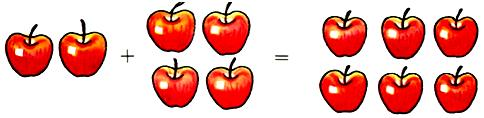
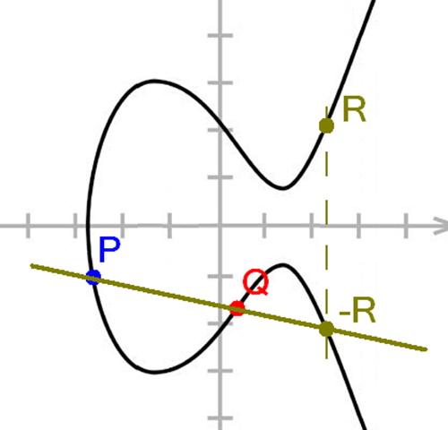
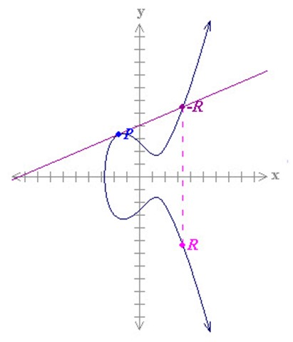

Point Addition!


Point addition on an elliptic curve takes advantage of the symmetry of the X axis. To add two points P and Q, draw a straight line through the points until they
intersect at a third point. The inverse of this point is the sum of the two points. We can calculate the slope of the line by finding the rise over the run. To add
points \((x_1,y_1) and (x_2,y_2)\) we would start with calculating λ = \({y_2-y_1} \over {x_2-x_1}\). Then to calculate the additive point \((R_x,R_y)\) we would
use the two formulas \(R_x=λ^2 - x_1 - x_2\) and \(R_y=λ(x_1-R_x)-y_1\). Usng these formulas we can calculate the new point\((R_x, R_y)\). You can
see this in the diagram to the left.
Adding a point to itself is called point doubling. First we calculate the slope of the tangential line through the point \((x_1,y_1)\), and then calculate where
that line intersects the curve
a second time. The inverse of that point is the solution. For point doubling, the slope is calculated as λ = \({3x_1^2 + a} \over {2y_1}\). The point resulting
point is then caluclated using the forumulas \(R_x = λ^2-2*x_1 and R_y = -(y_1 + λ(R_x-x_1))\). You can see this in the diagram on the right.
On the table below, we can see the results of our points being added to each other, or to themsevles (point doubling). Points that add to inifity are not useful to us
when a calculation ends there, and we will use infinity as a stopping point when calculating the sequence of G, 2G, 3G etc. We are also going to include three theorms
in our calculations.
P + Q = Q + P
P + -P = Infinity
Infinity + P = P
On the next page, we will select a point 'G', also called the Generator Point. The generator point is public, known to both Alice and Bob, as well as anyone listening in.